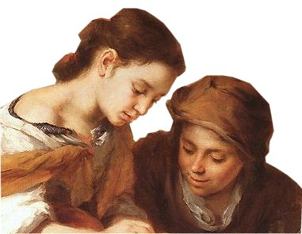

|


Again based
on the information passed on by Brother Jean-Benoît Charette,
genealogist, here are the nine children of Jacques Charette and
Marie-Amable-Marguerite Varin dite La Pistole.
The information has been completed
with the baptism and marriage records found in the digitized Drouin
collection.
Louis,
born late 1810 or early 1811 in .... He married
Victoire Laliberté, daughter of Dominique
and Marguerite Demers, on February 1, 1841, in Pierrefonds. 
Jacques,
born October 29, 1813, in Saint-Laurent de Montréal. His godparents were
Louis de Carry and Marguerite Hunault. On November 16, 1835, in
Sainte-Anne-des-Plaines, Terrebonne county, he married Théotiste Dubois, daughter
of Joseph and Charlotte Papineau. He died on December 17, 1897, in
St-Henri. JACQUES
IS OUR ANCESTOR OF THE 7th GENERATION
see the website devoted to him by clicking the
"The 14 generations" link above
Pierre,
born June 29, 1817, in Saint-Laurent de Montréal; his godparents were
Michel Viau and Geneviève Hogue. On January 26, 1841, in
Saint-Jérôme, Terrebonne county, he married Apolline Martineau, widow of Ignace
Lauzon. Pierre's witness was his brother Benjamin. He died
on February 2, 1879, in Montréal.
François,
born March 9, 1819, in Saint-Laurent de Montréal. His godparents were
Pierre Groult and Élisabeth Fournier.
Rosalie,
born February 6, 1821, in Saint-Laurent de Montréal. Her godparents were
Augustin Gohier and Rosalie Decarry.
Praxède,
born on ...; on October 15, 1838, in Saint-Laurent de
Montréal, she married Pierre Cousineau, son of Amable and Josephte Beaulieu.
Praxède was a minor; her brother Jacques was her witness, and her
parents are described as "of St-Jérôme". (Hypothesis:
could Rosalie and Praxède be the same person? It is not unusual for
the name given on the baptism record to differ from the one
actually used in life, which then turns up later on
the marriage record)
Benjamin,
born July 9, 1824, in Saint-Joachim de Pointe-Claire; his godparents
were Benjamin Boyer and Marguerite Clément. On January 9, 1849,
in Saint-Jérôme, Terrebonne county, he married Marcelline Raymond dite
Michaudville, daughter of Michel and Victoire Gauthier. He died on
October 8, 1883, in Saint-Sauveur-des-Monts, Terrebonne county.
Sophie,
born on ... On October 12, 1852, in Saint-Jérôme,
Terrebonne county, she married Sévère D'Aragon, son of Jean-Baptiste and Josephte
Jammes. Sophie was a minor; her witnesses were her father and her brother
Pierre.
Michel, born
on ... On November 8, 1870, at Saint-Henri-des-Tanneries in
Montréal, he married Marie Desforges dite Saint-Maurice, daughter of François and
Elmire Cardinal.
|